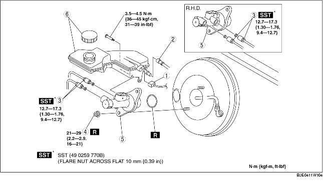

1. For L.H.D., remove the battery and battery tray. (See BATTERY REMOVAL/INSTALLATION [ZJ, Z6].) (See BATTERY REMOVAL/INSTALLATION [LF].)
2. Remove in the order indicated in the table.
3. Install in the reverse order of removal.

.
|
1
|
Brake fluid level sensor connector
|
|
2
|
Reserve hose (MTX)
(See Reserve Hose Removal Note.)
|
|
3
|
Brake pipe
|
|
4
|
Nut
|
|
5
|
Master cylinder
|
|
6
|
Reserve tank, cap
|
1. Remove the reserve hose from the reserve tank while pressing the point indicated by the arrow in the figure.
1. Insert the reserve hose to the reserve tank until a click is heard.
2. Verify that the reserve hose is firmly installed by pulling it, and push it into the reserve tank again.